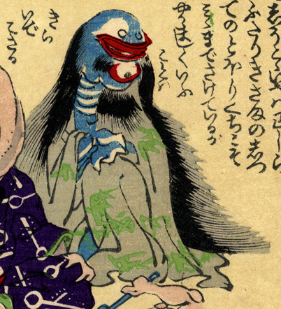

一つ目の化物。髪が長く、女と思われる。赤い口の下、顎の部分に大きな目玉が付いている。首はやや長く、肌が青い。立て膝をついて座っている。
出典：親書誌：U426_nichibunken_0226：化物の嫁入；バケモノノヨメイリ／日付：2010／資源識別子：U426_nichibunken_0226_0009_0000
Copyright (c)2010- International Research Center for Japanese Studies, Kyoto, Japan. All rights reserved.